Leviatã novo · rodada 2
Bloco D · 18/10/2026 · as suas escolhas da rodada 1 aplicadas. ← rodada 1 · rodada 3 →
Capítulo 4 · a nave sai da ferida, menor no jogo
A nave agora termina a saída na metade do tamanho (NAVE_ESCALA = 0.5 em src/scenes/final/fora.ts). É um fator só para todos os tiers, então a evolução entre eles continua a mesma. Os GIFs estão em velocidade real, 8 s, do corte até a queda.
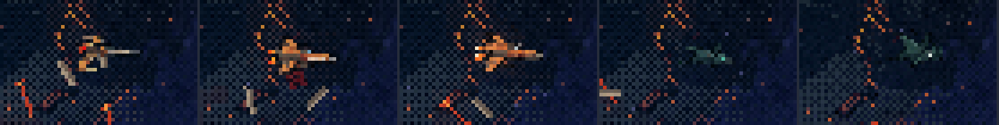


a ver As mantas alien são escuras e, na metade do tamanho, quase somem no céu escuro. As humanas, laranja, aparecem bem. Se o tamanho estiver certo, dá para assar versões reduzidas de cada nave fora do jogo (redução com filtro bom, como as 12 escalas da reentrada), o que deixa o contorno mais limpo que a redução do motor. Também dá para usar um fator um pouco maior só na linhagem alien.
Capítulo 5 · a reentrada · edição 83 no jogo
Recortada pelo processo de 24/09: a borda em brasa amansada e as 12 escalas assadas. O corpo ficou com 160×161 (o de hoje tinha 170×161). O antigo está em assets/raw/f8-reentrada*-original.png. A sonda da cena final passa nos capítulos 5, 6 e 7.


Capítulos 6 e 7 · a carcaça 82, com a dorsal
A 82 recebeu a barbatana de cima por inpaint, só numa região em cunha no dorso, entre o fim das costelas e a cabeça. O resto são os pixels da 82. Tudo capturado no capítulo 6 de verdade.
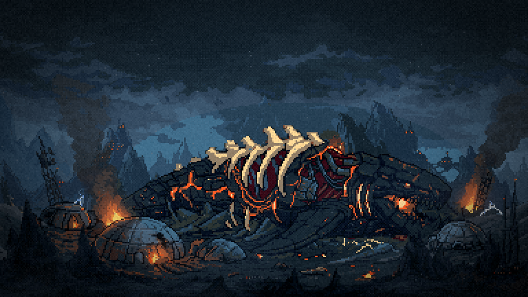
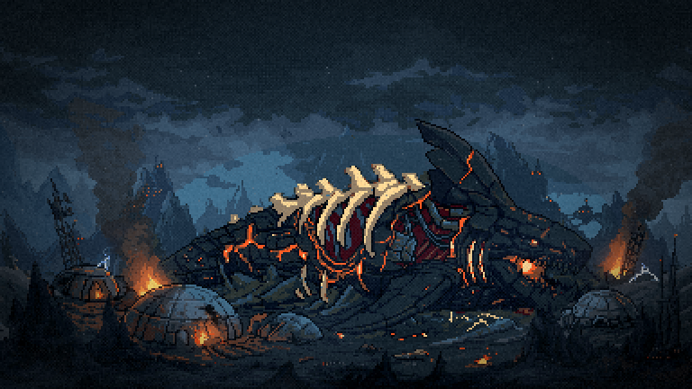
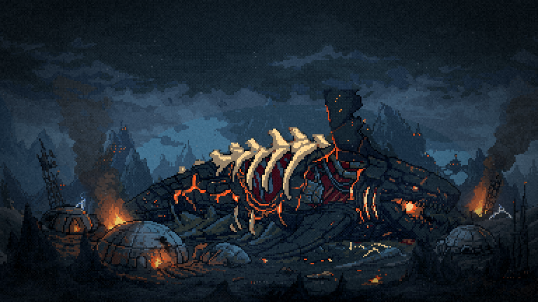
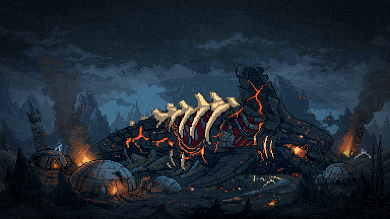
descartadas A 91 e a 97 vieram com áreas brancas. As 3 de máscara curva (94–96) saíram ralas e se perdem no céu. As 2 feitas por edição inteira da 82 viraram uma crista de espinhos, não uma barbatana. Ficam em cenas/dorsal/.
depois da escolha Roda a instalação de 24/09 (_gerar-sobrevoo.mjs instalar): a versão fria do capítulo 7 e a folha da lava que apaga placa por placa, nas duas com a dorsal.
Menu · agora a partir do Leviatã NOVO
Nada do armored antigo: tudo sai da base aprovada (aprovado/leviata-base.png), o mesmo bicho do capítulo 4. São três caminhos: gerado pequeno no PixelLab com a base de referência e de estilo, o /resize de pixel art do PixelLab, e a redução direta.
O problema que apareceu: o bicho novo é quase preto, e no menu (tint frio, véu, bruma) todos sumiram. Veja a captura abaixo. O de hoje aparece por causa das costelas pálidas no flanco, que o novo não tem. A solução foi a luz da lua assada em pixel: uma borda azul-aço clara em toda aresta de cima (dorso, dorsal, lobos do rabo, cabeça), uma segunda fileira mais suave e o casco um pouco mais claro. O desenho é o mesmo, iluminado para o lugar onde ele vive (o lado que vem acende).
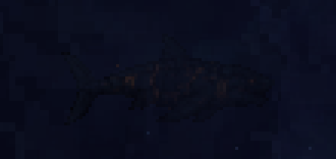
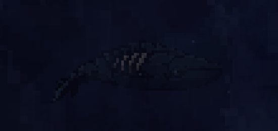
Gerada 91·0 + luz a minha aposta
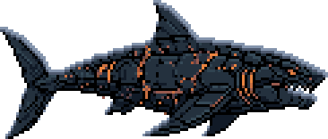
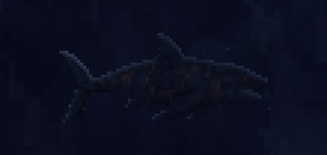
Gerada 91·2 + luz
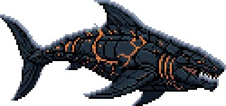
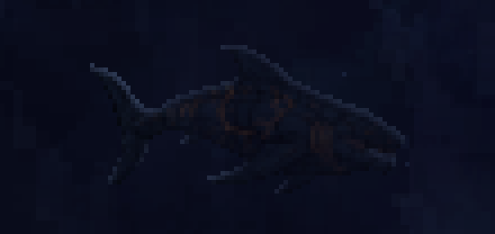
Gerada 91·3 + luz
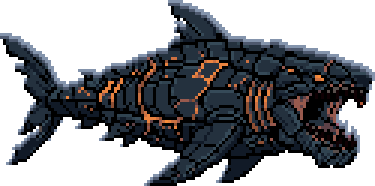
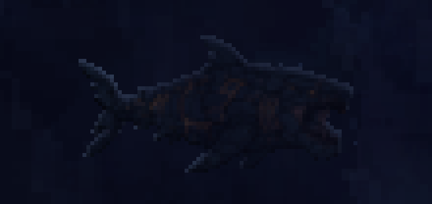
Gerada 92·2 + luz
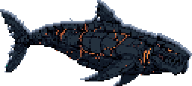
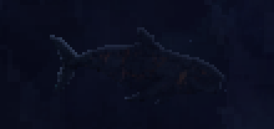
Resize 91 + luz
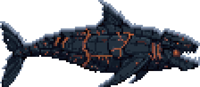
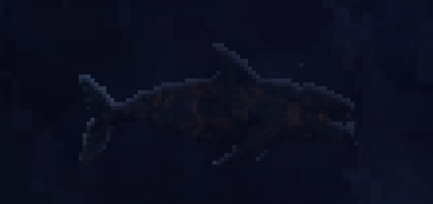
As versões sem luz de todas as gerações (11 no total) estão em cenas/menu2/ (*-grande.png).
depois da escolha O escolhido vira o quadro 0 do nado. O nado sai no PixMiniMax, com o gesto de tubarão (escorço lateral do rabo, não rotação), e a luz da lua é reaplicada quadro a quadro. Depois vem o GIF no menu. A silhueta da F2 e da F3 sai do mesmo escolhido.